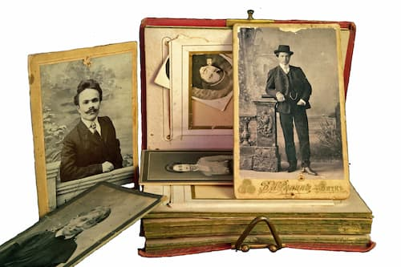

Our Research Portfolio
At Forebear Find, we take pride in helping families uncover their histories and preserve their legacies. Below are some examples of our past projects, showcasing the depth and care we bring to every genealogy journey.
Sample Projects
Tracing Italian Ancestry for Citizenship
We assisted a client in tracing their Italian lineage back to the early 1900s, uncovering birth and marriage records from a small village in Sicily. These documents supported their successful application for Italian dual citizenship.

African American Lineage Research
For a family seeking their roots, we traced their lineage through Reconstruction-era records, identifying formerly enslaved ancestors in South Carolina. The project culminated in a detailed family tree and narrative history.

Scots-Irish Immigration Story
We explored a client’s Scots-Irish heritage, uncovering immigration records from the 1800s that detailed their ancestors’ journey to America. The final deliverable was a narrative history, complete with historical context and photos.
Ready to Start Your Journey?
These projects are just a glimpse of what we can do for you. Contact us today to discuss your own genealogy project and how we can help bring your family’s story to life.